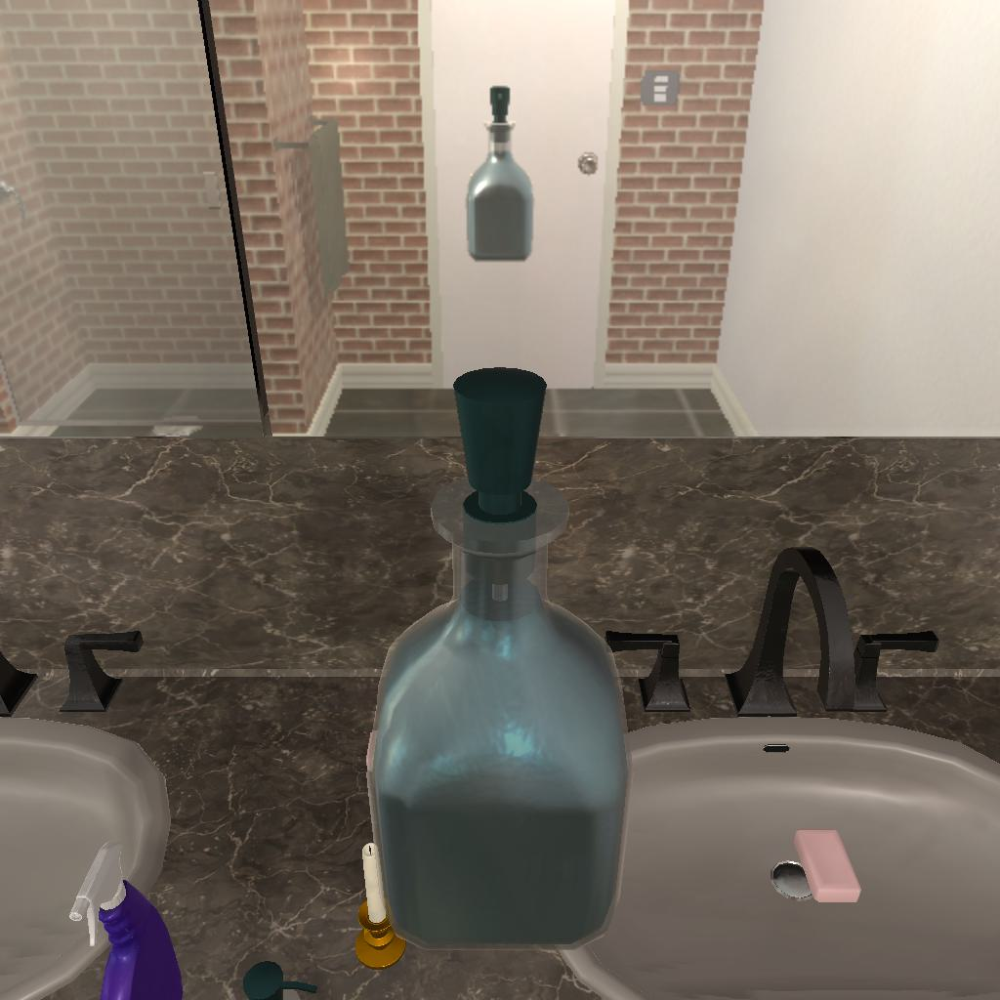

---------------------------------------------------------task: 27---------------------------------------------------------
--------------------------------------------------------------------------------------------------------------------------------------------------------------------
--------------------------------------------------------------------------------------------------------------------------------------------------------------------
Step:--------------------------------------------------------------------------14-------------------------------------------------------------------------------
----------------------------------------
VLM Prompt:
Image1:
Image2:
**Instruction**
1. Analyze the provided images to identify all visible household objects and compare the difference between images (e.h. whether the object is opened or not and taken on hand or not), focusing on those relevant to the task description "find two soapbottle and put them in garbagecan."
2. Use the analysis of images and the task hint "The agent must find an object of the desired type, pick it up, find the correct location to place it, put it down there, then look for another object of the desired type, pick it up, return to previous location, and put it down there with the other object." to answer the question: what is the most reasonable action in the choices for the task description "find two soapbottle and put them in garbagecan"?
3. Decide and write the answer using the template: The answer is: (i): , where i is the real number. If there is no desired object in images, search every place based on **Initial Observation** to find the object. And if no one is exactly correct, choose a similar answer.
**Initial Observation**
You are in the middle of a room. Looking quickly around you, you can see countertop (1), sinkbasin (1-2), sink (1-2), garbagecan (1), drawer (1-2), toilet (1), handtowelholder (1)
**Answer Choices**
(1): go to countertop 1
(2): go to sinkbasin 1
(3): go to sink 1
(4): go to drawer 2
(5): go to sink 2
(6): go to toilet 1
(7): go to handtowelholder 1
(8): put soapbottle 2 in/on garbagecan 1
(9): examine soapbottle 2
(10): examine garbagecan 1
**Answer**
Let's think step by step by following the instructions.
----------------------------------------
----------------------------------------
Original Response:
First, we analyze the images provided:
Image 1: We can see a soap bottle on the countertop, near the sink basin. It appears to be closed and not in hand. There is also a garbage can visible in the image.
Image 2: Another soap bottle is visible on the countertop, next to the toilet. This bottle also appears to be closed and not in hand.
Comparing the images, we can identify that both images have a soap bottle that is relevant to the task description "find two soap bottles and put them in the garbage can."
Based on the task hint, we must find an object of the desired type (soap bottle), pick it up, find the correct location to place it (garbage can), put it down there, then look for another object of the desired type (second soap bottle), pick it up, return to the previous location (garbage can), and put it down there with the other object.
Given the initial observation and the task at hand, the most reasonable actions would be to first go to the location of the soap bottles, pick them up, and then go to the garbage can to put them in.
However, looking at the answer choices provided, there are no options to pick up the soap bottles. The closest relevant actions would be to go to the locations of the soap bottles and then go to the garbage can.
The answer is: (1): go to countertop 1, then (2): go to sinkbasin 1, and finally (8): put soapbottle 2 in/on garbagecan 1. If we consider that soapbottle 2 refers to the second soap bottle we need to find and put in the garbage can, then these actions would complete the task. However, since there is no direct instruction to pick up the soap bottles, we assume the agent would do so upon reaching the locations.
----------------------------------------
----------------------------------------
>>> Refine Original VLM Response and Get Pure Action: go to countertop 1, then (2): go to sinkbasin 1, and finally (8): put soapbottle 2 in/on garbagecan 1
----------------------------------------
-----------------------------------------------------------------
Running time: 19.67860198020935 seconds
Total Money: 14.200560000000001
-----------------------------------------------------------------
-----------------------------------------------------------------
Text Observation:Nothing happens.
-----------------------------------------------------------------
UNSUCCEED